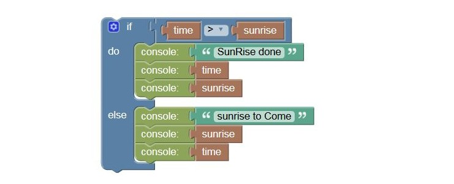

LamPI contains 7 main screens at the moment: Rooms, Scenes, Timers, Handsets, Sensors, Energy and Config. For every screen I have assembled a few pages that contain instructions on common tasks you will perform. The documentation for the LamPI functions can be found on this site on the following pages.
In beta at the moment, an alternative interface for devices and sensors viewing.
The LamPI rules editor is based on the Google Blockly work, and enables user to make dynamic rules that will be executed in LamPI.
Apart from the GUI interface, on the backend there are some other programs active that interact with home automation switches in our house. Backend services are provided by the LamPI-node.js process and located in the ~ directory. Some supporting executables are located in the ~/exe directory, especially as these need root privileges to run I put them all in a separate location.
How to make sensor trend graphics for historical temperature, humidity etc. using rrdtool
July 07, 2015